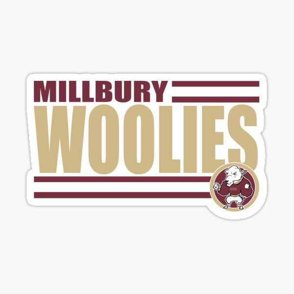

Massachusetts Millbury Woolies
Millbury Memorial Junior/Senior High School is a public school in Millbury, Massachusetts, serving students in grades seven through twelve. The school was founded in 1851.
- the mill still produces wool for the inside of Rawlings baseball mitts.
- known to have coached sports at Millbury High.
- In 1996, Erin Dromgoole of Millbury High was the female recipient of the Wendy's High School Heisman for that year.

Index page